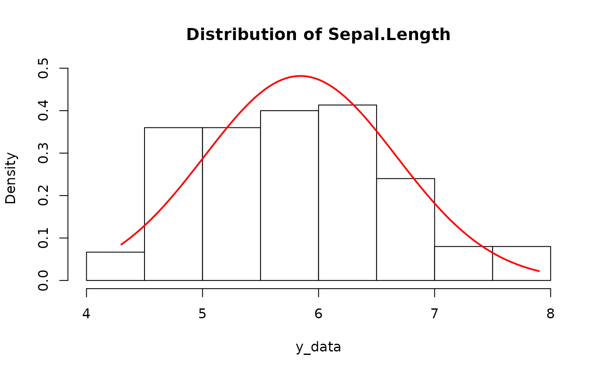
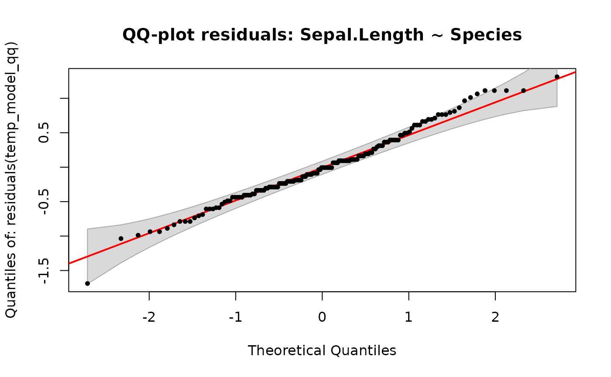

Statistical Test Wizard
f_stat_wizard.RdAnalyzes your data structure based on a formula and recommends the appropriate statistical test. Checks variable types, normality of residuals, homogeneity of variance, and checks if f_boxcox transformation can fix non-normality. Recommends rfriend functions as primary code, with base R alternatives shown as fallback.
Supports standard formulas including y ~ ., y ~ as.factor(x), and interaction
terms. Formulas with random effects (e.g. (1|ID)) are detected and handled separately.
Multivariate responses (e.g. cbind(y1, y2) ~ x) and transformed responses
(e.g. log(y) ~ x) are not supported.
Usage
f_stat_wizard(x, ...)
# S3 method for class 'formula'
f_stat_wizard(
formula,
data,
id_col = NULL,
run = FALSE,
plots = FALSE,
output_type = "word",
interactive = FALSE,
data_name = NULL,
...
)
# S3 method for class 'data.frame'
f_stat_wizard(
x,
formula,
id_col = NULL,
run = FALSE,
plots = FALSE,
output_type = "word",
interactive = FALSE,
data_name = NULL,
...
)Arguments
- x
A formula (e.g.,
y ~ x) or a data frame. When a formula is provided,datamust also be supplied. When a data frame is provided,formulamust be supplied as the second argument.- ...
Additional arguments (currently unused).
- formula
A formula specifying the relationship (used with the data.frame method).
- data
A data frame containing the variables referenced in the formula.
- id_col
Character string. Name of the column identifying subjects/blocks for paired or repeated-measures designs. When supplied, the wizard (a) verifies the pairing structure (each subject should appear in every group exactly once), (b) treats the design as paired/repeated measures, and (c) embeds the real column name into the generated code. Omit for independent-samples designs. Default
NULL.- run
Logical. If
TRUE, the wizard attempts to execute the recommended rfriend function and stores the result in$run_result. Only works for unambiguous single-function recommendations (not multi-step or external packages). DefaultFALSE.- plots
Logical. If
TRUE, generates diagnostic plots usingf_hist()(histogram of the response) andf_qqnorm()(QQ-plot of model residuals). Plots are stored in the result as$histogramand$qqplot(recordedplotobjects) and displayed by the print method. DefaultFALSE.- output_type
Character string specifying the output format of the recommended rfriend function (when
run=TRUE) and the displayed code strings. Passed through tof_aov(),f_t_test(),f_glm(), etc. Valid values match those of the underlying function ("word","pdf","excel","console","default","rmd"). Default"word".- interactive
Logical. If
TRUE, asks the user questions about study design. DefaultFALSE.- data_name
Character string to name the data base used. Default
NULL, which automatically derives the data name from the data frame used as input.
Value
An object of class "f_stat_wizard": a list containing:
- formula
The formula used.
- formula_text
Character string of the formula.
- data_name
Name of the data object as passed by the user.
- n
Effective sample size (after NA removal).
- n_dropped
Number of rows removed due to missing values.
- paired
Logical. Whether a paired/repeated-measures design was detected (via
id_col).- id_col
Character. Name of the subject/block column supplied, or
NULL.- y_var
Name of the response variable.
- y_type
Detected type of the response:
"binary","count","multinomial","ratio_normal","ratio_non_normal","ratio_unknown", or"unsupported".- x_vars
Character vector of explanatory variable names.
- x_types
Character vector of detected types (
"nominal","ordinal","ratio").- n_groups
Number of groups (for single categorical X), or
NULL.- group_sizes
Table of per-group sample sizes, or
NULL.- is_ancova
Logical.
TRUEif the model mixes nominal and ratio predictors.- has_interaction
Logical.
TRUEif interaction terms were detected.- normality
A list with
p_value(Shapiro-Wilk) andis_normal(logical orNA).- variance
A list with
test_used("Levene"or"Bartlett"),p_value, andis_equal(logical).- boxcox
A list with
attempted(logical),can_fix(logical), andp_value_after(numeric orNA).- overdispersion
A list with
is_overdispersed(logical, from DHARMa dispersion test) andp_value. Only meaningful for count data.- recommended_call
A language object representing the rfriend function call, or
NULLif no single function could be determined.- run_result
The result of executing the recommended test (when
run=TRUE), orNULL.- histogram
A
recordedplotfromf_hist()(whenplots=TRUE), orNULL.- qqplot
A
recordedplotfromf_qqnorm()of model residuals (whenplots=TRUEand Y is continuous), orNULL.- report
Character vector of the human-readable report lines (used by
print.f_stat_wizard).
Examples
# Formula interface (recommended)
f_stat_wizard(Sepal.Length ~ Species, data = iris)
#> ---------------------------------------------------
#> rfriend STATISTICAL WIZARD
#> ---------------------------------------------------
#> Model: Sepal.Length ~ Species
#> Effective sample size: n = 150
#> -> Explanatory: Single variable (nominal).
#> -> Response: Numeric. Checking normality of residuals...
#> OK: Residuals appear Normal (Shapiro p=0.219).
#> WARN: Variances UNEQUAL (Levene p=0.002).
#> ---------------------------------------------------
#>
#> RECOMMENDATION:
#> Test: One-Way ANOVA (variances unequal — see note)
#> Code: f_aov(Sepal.Length ~ Species, data=iris, output_type="word")
#> Note: Levene flagged unequal variances. f_aov() is reasonably robust
#> for balanced designs; for strict correctness use Welch's ANOVA:
#> Alternative: oneway.test(Sepal.Length ~ Species, data=iris, var.equal=FALSE)
#> Post-hoc: f_aov() includes post-hoc tests (adjust='sidak' by default)
#> Effect size: rstatix::eta_squared() for eta-squared
#>
#> ---------------------------------------------------
#> Disclaimer:
#> - This wizard checks data properties, not experimental design.
#> - Always verify if your data is Paired or Independent!
#> - BETA: f_stat_wizard is new and under active development — verify recommendations.
#> - Other tests than the recommended one could be more suitable.
#> The WIZARD recommends exclusively from these rfriend functions:
#> f_t_test, f_aov, f_glm, f_chisq_test,
#> f_kruskal_test, f_wilcox_test, f_corplot,
#> f_boxcox (transformation), f_scan (diagnostics)
#> And these external packages (when no rfriend wrapper exists):
#> oneway.test (Welch ANOVA), MASS::glm.nb (Neg. Binomial),
#> nnet::multinom (Multinomial), cor.test (correlation test).
# Data-first interface (backward compatible)
f_stat_wizard(iris, Sepal.Length ~ Species)
#> ---------------------------------------------------
#> rfriend STATISTICAL WIZARD
#> ---------------------------------------------------
#> Model: Sepal.Length ~ Species
#> Effective sample size: n = 150
#> -> Explanatory: Single variable (nominal).
#> -> Response: Numeric. Checking normality of residuals...
#> OK: Residuals appear Normal (Shapiro p=0.219).
#> WARN: Variances UNEQUAL (Levene p=0.002).
#> ---------------------------------------------------
#>
#> RECOMMENDATION:
#> Test: One-Way ANOVA (variances unequal — see note)
#> Code: f_aov(Sepal.Length ~ Species, data=iris, output_type="word")
#> Note: Levene flagged unequal variances. f_aov() is reasonably robust
#> for balanced designs; for strict correctness use Welch's ANOVA:
#> Alternative: oneway.test(Sepal.Length ~ Species, data=iris, var.equal=FALSE)
#> Post-hoc: f_aov() includes post-hoc tests (adjust='sidak' by default)
#> Effect size: rstatix::eta_squared() for eta-squared
#>
#> ---------------------------------------------------
#> Disclaimer:
#> - This wizard checks data properties, not experimental design.
#> - Always verify if your data is Paired or Independent!
#> - BETA: f_stat_wizard is new and under active development — verify recommendations.
#> - Other tests than the recommended one could be more suitable.
#> The WIZARD recommends exclusively from these rfriend functions:
#> f_t_test, f_aov, f_glm, f_chisq_test,
#> f_kruskal_test, f_wilcox_test, f_corplot,
#> f_boxcox (transformation), f_scan (diagnostics)
#> And these external packages (when no rfriend wrapper exists):
#> oneway.test (Welch ANOVA), MASS::glm.nb (Neg. Binomial),
#> nnet::multinom (Multinomial), cor.test (correlation test).
# Paired design -- supply the id_col that identifies matched subjects
f_stat_wizard(extra ~ group, data = sleep, id_col = "ID")
#> ---------------------------------------------------
#> rfriend STATISTICAL WIZARD
#> ---------------------------------------------------
#> Model: extra ~ group
#> Effective sample size: n = 20
#> Design: PAIRED / Repeated Measures (id_col = 'ID')
#> OK: Pairing structure verified (10 subjects × 2 groups, one observation per cell).
#> -> Explanatory: Single variable (nominal).
#> -> Response: Numeric. Checking normality of residuals...
#> CAVEAT: For paired tests, normality should be checked on within-pair
#> differences, not model residuals. Verify manually after pairing.
#> OK: Residuals appear Normal (Shapiro p=0.097).
#> OK: Variances appear equal (Levene p=0.624).
#> ---------------------------------------------------
#>
#> RECOMMENDATION:
#> Test: Paired T-test
#> Code: f_t_test(extra ~ group, data=sleep, paired=TRUE, output_type="word")
#> (Base R: t.test(extra ~ group, data=sleep, paired=TRUE))
#> Effect size: rstatix::cohens_d() for Cohen's d
#>
#> ---------------------------------------------------
#> Disclaimer:
#> - This wizard checks data properties, not experimental design.
#> - Always verify if your data is Paired or Independent!
#> - BETA: f_stat_wizard is new and under active development — verify recommendations.
#> - Other tests than the recommended one could be more suitable.
#> The WIZARD recommends exclusively from these rfriend functions:
#> f_t_test, f_aov, f_glm, f_chisq_test,
#> f_kruskal_test, f_wilcox_test, f_corplot,
#> f_boxcox (transformation), f_scan (diagnostics)
#> And these external packages (when no rfriend wrapper exists):
#> oneway.test (Welch ANOVA), MASS::glm.nb (Neg. Binomial),
#> nnet::multinom (Multinomial), cor.test (correlation test).
# With diagnostic plots
f_stat_wizard(Sepal.Length ~ Species, data = iris, plots = TRUE)


#> ---------------------------------------------------
#> rfriend STATISTICAL WIZARD
#> ---------------------------------------------------
#> Model: Sepal.Length ~ Species
#> Effective sample size: n = 150
#> -> Explanatory: Single variable (nominal).
#> -> Response: Numeric. Checking normality of residuals...
#> OK: Residuals appear Normal (Shapiro p=0.219).
#> Plot: Histogram of 'Sepal.Length' generated.
#> Plot: QQ-plot of residuals generated.
#> WARN: Variances UNEQUAL (Levene p=0.002).
#> ---------------------------------------------------
#>
#> RECOMMENDATION:
#> Test: One-Way ANOVA (variances unequal — see note)
#> Code: f_aov(Sepal.Length ~ Species, data=iris, output_type="word")
#> Note: Levene flagged unequal variances. f_aov() is reasonably robust
#> for balanced designs; for strict correctness use Welch's ANOVA:
#> Alternative: oneway.test(Sepal.Length ~ Species, data=iris, var.equal=FALSE)
#> Post-hoc: f_aov() includes post-hoc tests (adjust='sidak' by default)
#> Effect size: rstatix::eta_squared() for eta-squared
#>
#> ---------------------------------------------------
#> Disclaimer:
#> - This wizard checks data properties, not experimental design.
#> - Always verify if your data is Paired or Independent!
#> - BETA: f_stat_wizard is new and under active development — verify recommendations.
#> - Other tests than the recommended one could be more suitable.
#> The WIZARD recommends exclusively from these rfriend functions:
#> f_t_test, f_aov, f_glm, f_chisq_test,
#> f_kruskal_test, f_wilcox_test, f_corplot,
#> f_boxcox (transformation), f_scan (diagnostics)
#> And these external packages (when no rfriend wrapper exists):
#> oneway.test (Welch ANOVA), MASS::glm.nb (Neg. Binomial),
#> nnet::multinom (Multinomial), cor.test (correlation test).
# Run the recommended test directly
result <- f_stat_wizard(Sepal.Length ~ Species, data = iris, run = TRUE)
result$run_result
#>
#>
#> ===========================================================
#> ANOVA of Box-Cox TRANSFORMED response variable: Sepal.Length
#> ===========================================================
#>
#> aov call: Sepal.Length ~ Species
#>
#> TRANSFORMED Summary Table:
#> Df Sum Sq Mean Sq F value Pr(>F)
#> Species 2 63.21 31.606 119.3 <2e-16 ***
#> Residuals 147 38.96 0.265
#> ---
#> Signif. codes: 0 ‘***’ 0.001 ‘**’ 0.01 ‘*’ 0.05 ‘.’ 0.1 ‘ ’ 1
#>
#> --- BACK TRANSFORMED Post hoc Comparisons of: Sepal.Length ---
#> Species median (BT) lower.CL upper.CL Letter n
#> setosa 4.992078 4.851838 5.136978 a 50
#> versicolor 5.910783 5.740686 6.086676 b 50
#> virginica 6.553397 6.362011 6.751403 c 50
#> ___________________________
#>
#> Note: 'median (BT)' = back-transformed estimated marginal mean. Back-transforming a mean from a transformed scale returns the MEDIAN on the original scale, not the arithmetic mean. Report these as back-transformed medians. CIs are valid; SE is omitted (asymmetric on original scale).
#>
#>
# Inspect metadata
result <- f_stat_wizard(Sepal.Length ~ Species, data = iris)
result$y_type
#> [1] "ratio_normal"
result$normality
#> $p_value
#> [1] 0.2188639
#>
#> $is_normal
#> [1] TRUE
#>
result$group_sizes
#> grp_col
#> setosa versicolor virginica
#> 50 50 50